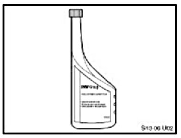
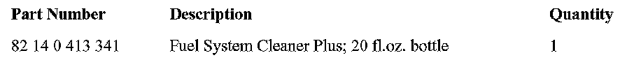

Fuel System - TOP TIER Gasoline Usage Recommendations
SI B 13 02 06September 2006
Fuel Systems
Technical Service
This Service Information bulletin supersedes S.I. B13 02 06 dated April 2006.
[NEW] designates changes to this revision
SUBJECT
TOP TIER Detergent Gasoline in BMW Vehicles
MODEL
All with gasoline engines
INFORMATION
Deposit-control additives have been required by the EPA in all gasoline from 1995; however, since the introduction of the lowest additive concentration (LAC) most gasoline manufacturers have actually reduced the concentration level of detergent additives by up to 50%.
Low content of cleaning additives results in an excessive accumulation of deposits on fuel injectors, the intake valves, the exhaust manifold or inside the combustion chamber. Due to deposits build-up, customers may experience various driveablity problems (e.g. cold start problems, rough idle), increased emissions with Service Engine Soon light illumination, reduced engine performance and poor fuel economy.
In order to increase the level of detergent additives in gasoline, the TOP TIER Detergent Gasoline requirements were approved by four automotive companies (BMW, GM, Honda and Toyota).
Usage of the TOP TIER Detergent Gasoline will help keep engines cleaner, and will reduce deposits-related concerns.
A number of gasoline retailers have already met the TOP TIER Detergent Gasoline requirements and are offering this product in all octane grades in all of their respective marketing areas. The current TOP TIER Gasoline retailers are: Chevron(R); Texaco(R); QuickTrip(R); ConocoPhillips(R); 76(R); Shell(R); Entec Stations(R); MFA Oil Company(R); Kwik Trip(R)/Kwik Star(R); The Somerset Refinery, Inc.(R); Aloha Petroleum(R); Jiffy Mart(R); Mahalo(R); Trip-Par Oil Company(R). All gasoline outlets carrying the brand of the approved retailer must conform to TOP TIER requirements on products advertised as such.
RECOMMENDATION
BMW recommends using TOP TIER Detergent Gasoline of minimum octane rating of AKI 91 and with alcohol content of less then 10% by volume (or any other oxygenates with up to 2.8% of oxygen by weight). Only the exclusive usage of TOP TIER Gasoline provides the full benefit of reducing deposits build-up.
NOTE:
For more information related to alcohol fuels refer to SI B13 01 06 (Alcohol Fuel Blends in BMW Vehicles).
[NEW] If the TOP TIER Detergent Gasoline is unavailable, we recommend BMW Group FUEL SYSTEM CLEANER PLUS (PN 82 14 0 413 341) be added to the gas tank. For optimum cleaning and deposits control, add a 20 fl. oz. bottle every 3,000 miles when refueling.

[NEW] BMW Group FUEL SYSTEM CLEANER
PLUS.
PN 82 14 0 413 341,
1 bottle, 20 fl. oz.
Ordering in multiples of 6 bottles per case.

[NEW PARTS] INFORMATION
[NEW] WARRANTY INFORMATION
Because carbon deposit build-up is related to fuel quality, it cannot be considered as a defect in vehicle's materials or workmanship. Consequently, usage of BMW Group Fuel System Cleaner Plus is not covered under the terms of the BMW New Vehicle Limited Warranty or maintenance plan.

Disclaimer